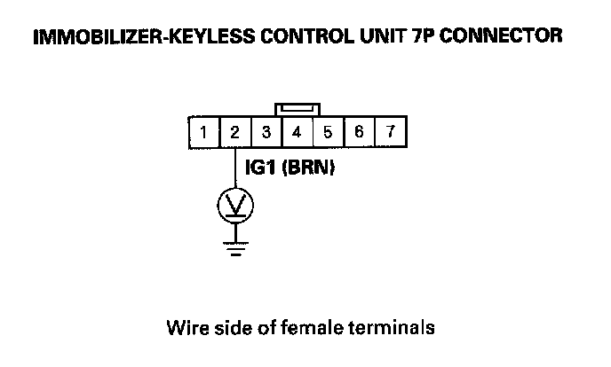

Immobilizer Indicator Blinks
Immobilizer indicator blinksNOTE: Before troubleshooting, check the items listed in "General Check before Troubleshooting".
1. Turn the ignition switch OFF.
2. Connect the HDS, then turn the ignition switch ON (II).
3. Enter the IMMOBILIZER, then select the IMMOBILIZER SETUP.
4. Check the SYSTEM CHECK and STATUS LOG information.
Is the SYSTEM CHECK indicated?
YES - Troubleshoot the immobilizer system according to the result of the SYSTEM CHECK/STATUS LOG.
NO - Go to step 5.
5. Turn the ignition switch OFF.
6. Enter the vehicle, and remove the ignition key from the ignition switch, then close the all doors.
7. Operate the keyless transmitter LOCK and UNLOCK several times in the vehicle.
Do the door lock actuators work normally?
YES - Go to step 8.
NO - Check for a poor ground (G101) and/or an open in the wire between the immobilizer-keyless control unit 7P connector No. 7 terminal and PCM connector A (49P) No. 41 terminal.
8. Turn the ignition switch ON (II).

9. Measure the voltage between the immobilizer-keyless control unit 7P connector No. 2 terminal and body ground.
Is there battery voltage?
YES - Go to step 10.
NO - Check fuse No. 21 (7.5 A) in the under-dash fuse/relay box or for an open in the BRN wire between the under-dash fuse-relay box and the immobilizer-keyless control unit.
10. Measure the voltage at the immobilizer-keyless control unit 7P connector No. 7 terminal and body ground.
Is there less than 0.5 V?
YES - Replace the immobilizer-keyless control unit.
NO - Check for a poor ground (G101) and/or repair poor connection or open between the immobilizer-keyless control unit 7P connector No. 7 terminal and PCM connector A (49P) No. 41 terminal.